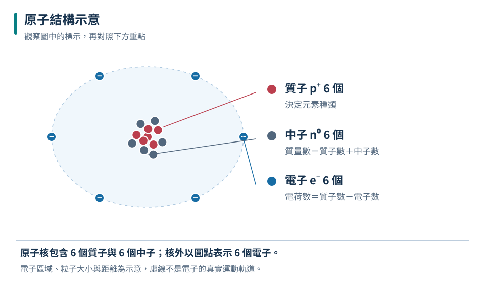
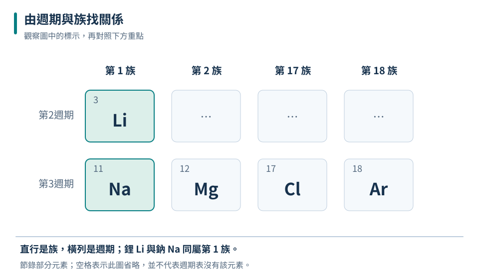
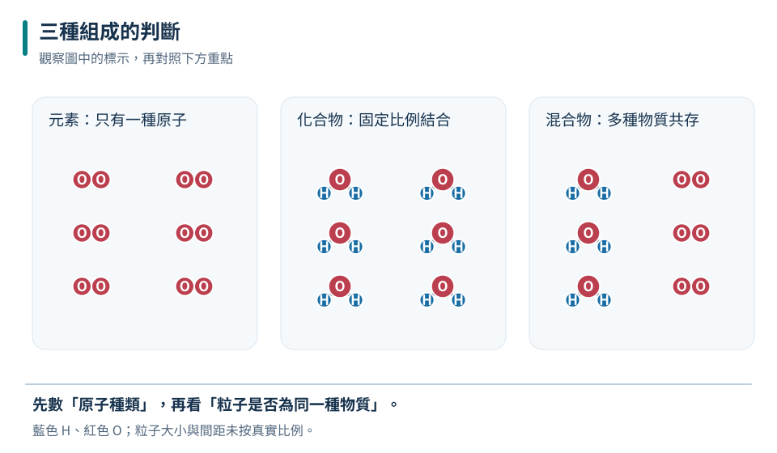
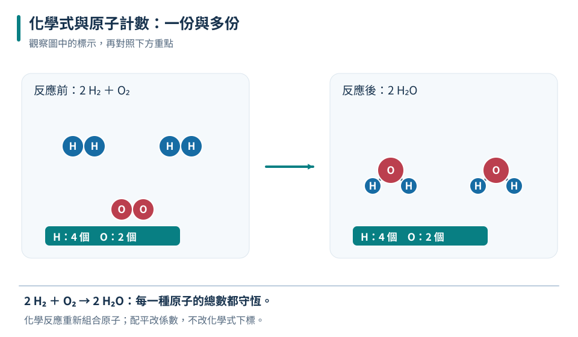

先看原子序
質子數決定元素，不能用電子數或中子數單獨判斷。
八上 · 化學 · 第 6 章
一杯水、一根鐵釘和一口空氣，看起來差異很大，卻都可以用微小粒子理解。本章先建立原子模型，再用週期表查找元素，最後練習讀出化學式所代表的粒子比例，分清楚元素、化合物與混合物，為化學反應做好準備。
先備概念：知道物質有質量並占有空間、能分辨純物質與混合物
LEARN & EXPLAIN
原子是建立物質模型的重要粒子。原子中心有很小的原子核，核內含帶正電的質子及不帶電的中子；核外有帶負電的電子。原子的質量主要集中在原子核，但原子的大小不能當成原子核的大小。課本的球與軌道只是示意，不能把電子想成沿著畫出的圓線行驶的小行星。
元素身分由質子數決定，質子數又叫原子序。中性原子的電子數等於質子數；若失去或得到電子，就成為帶電的離子。相同元素可以有不同中子數，這些原子互稱同位素。一般化學反應只涉及粒子重新組合與電子變化，不會把一種元素的原子核改造成另一種元素。
質子數決定元素，不能用電子數或中子數單獨判斷。
每個質子帶一單位正電，每個電子帶一單位負電；中子不影響電荷。
質量數＝質子數＋中子數，是粒子個數和，不能直接當作週期表上的平均原子量。

核內粒子决定元素與主要質量；核外電子影響電荷。圖中電子個數僅用於示意。
這是帶一單位正電的鈉離子，質量數為23。
失去電子不會改變元素名稱；只有質子數改變才代表元素改變。
LEARN & EXPLAIN
現代週期表依原子序遞增排列。橫列稱週期，直行稱族；同族元素常有相似的化學性質，因此位置不只是座號，也能協助預測反應。不過「相似」不代表所有性質完全相同，例如同族金屬的反應劇烈程度仍可能不同。
讀週期表時，要分開辨認元素符號、原子序與原子量。元素符號第一個字母大寫，第二個字母若有則小寫，例如Co代表鈷，CO卻是碳與氧組成的一氧化碳。原子量可能有小數，通常與天然樣品中不同同位素的比例有關，不代表原子核含有半個質子。
週期是橫列，族是直行；不同週期仍可能屬於同一族。
原子序是質子個數，必為整數；原子量是另一種資訊。
| 元素 | 原子序 | 週期 | 族 |
|---|---|---|---|
| Li | 3 | 2 | 1 |
| Na | 11 | 3 | 1 |
| Mg | 12 | 3 | 2 |
| Cl | 17 | 3 | 17 |
| Ar | 18 | 3 | 18 |

Li與Na同族；Na、Mg、Cl、Ar同週期。表格只節錄部分元素。
鋰與鈉較可能呈現相似化學性質。
原子序相鄰不保證性質最相似；週期表判讀需要看族與週期。
LEARN & EXPLAIN
元素是只含一種原子的純物質。鐵由鐵原子組成，氧氣通常以兩個氧原子結合的O₂分子存在；O₂仍然是元素，因為它只有氧這一種原子。化合物則含兩種以上元素以固定比例結合，例如水H₂O。把幾種物質放在一起而沒有全變成同一種物質，得到的是混合物。
金屬通常有金屬光澤、延展性，且善於導電與導熱；非金屬常不具這組特性，但有例外，例如石墨可以導電。同一種元素也可能形成不同結構，如碳可形成石墨或鑽石，性質差異不代表元素身分改變。分類時應綜合組成和多項觀察，不宜只憑顏色或單一性質。
一個氧分子含兩個氧原子，但只含一種元素。
石墨和鑽石都由碳組成，原子排列不同，性質可很不同。

先判斷物質種類，再判斷其中原子的元素種類。
不是純氧氣，而是由氧氣與臭氧組成的混合物；只涉及氧一種元素。
只含一種元素的樣品不一定只含一種物質；O₂和O₃混合就是反例。
LEARN & EXPLAIN
原子結合形成化合物後，新物質的性質不必像原來的元素。例如金屬鈉和氯氣形成氯化鈉，氯化鈉的性質不能由兩個原料的外觀直接拼湊。原子結合可涉及電子的轉移或共用；本階段先重視化學式表達的組成，不必把每種鍵結方式都化成背誦規則。
化學式右下角的小數字表示原子數或最簡整數比，省略時表示1。H₂O表示水分子含2個氫與1個氧；NaCl表示氯化鈉中鈉離子與氯離子的最簡比為1：1，不能把所有化合物都當成獨立分子。式子前的係數則乘上整個化學式，例如3H₂O合計有6個氫原子和3個氧原子。
Ca(OH)₂含1個Ca、2個O、2個H；右下角2同時作用於括號內的O與H。
改前係數改變粒子數量；改下標可能改變物質身分。
| 表示式 | 每份組成 | 合計 |
|---|---|---|
| H₂O | H：2，O：1 | 3H₂O → H：6，O：3 |
| CO₂ | C：1，O：2 | 2CO₂ → C：2，O：4 |
| Ca(OH)₂ | Ca：1，O：2，H：2 | 2份 → Ca：2，O：4，H：4 |

先處理括號與下標，再把每種原子數乘以前係數。
合計鋁4個、氧6個；這是化學式計數，不表示一定存在獨立Al₂O₃分子。
化合物不是把元素性質平均混合；組成和結構改變後，可以出現全新的性質。
TRY, OBSERVE, EXPLAIN
REVIEW
質子數決定元素，不能用電子數或中子數單獨判斷。
回到這一節複習週期是橫列，族是直行；不同週期仍可能屬於同一族。
回到這一節複習一個氧分子含兩個氧原子，但只含一種元素。
回到這一節複習Ca(OH)₂含1個Ca、2個O、2個H；右下角2同時作用於括號內的O與H。
回到這一節複習CHAPTER TEST
先獨立作答，再看解析。中難與難為編者估計，尚未經學生實測校準。